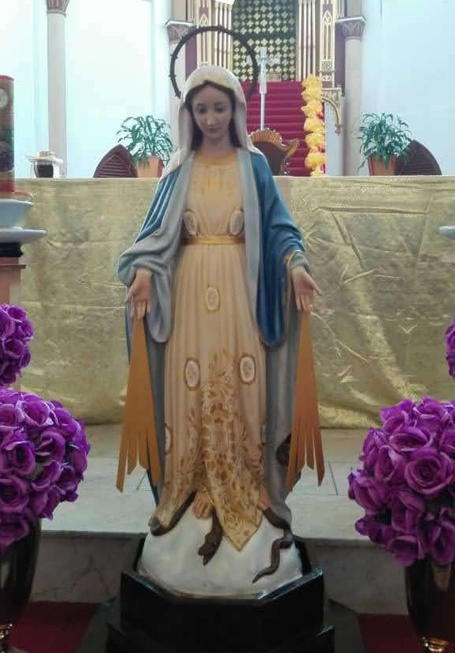
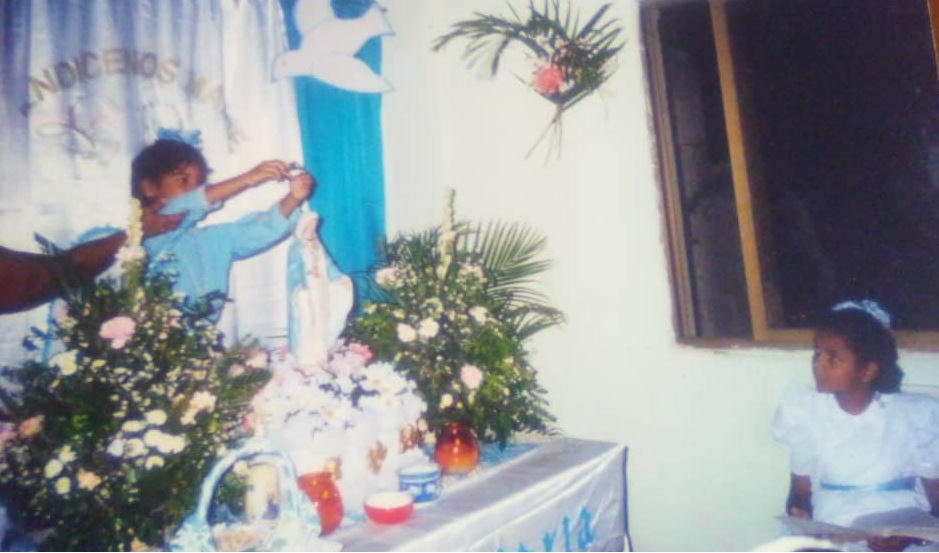

Grupos Llano Adentro y Calle la Marina de Punda

Virgen Medalla Milagrosa

Rosario en Familia
La idea de este grupo nace en mayo de 1990, con el objetivo de entronizar la imagen de la virgen en los hogares de la calle Gómez de la ciudad de Porlamar, para que fuese conocida y venerada por las familias de ese sector, pudiendo así participar con fervor en el rezo del santo Rosario en Familia como homenaje bendito a nuestra Madre, La Virgen María.
Con la ayuda de Fray Fidel Basta Romano, la Sra. Providencia Padilla y muchas personas del sector se entroniza la imagen de la virgen por primera vez el 12 de mayo de 1990, la primera imagen entronizada fue de la Medalla Milagrosa de la Sra. Marcolina Vásquez, sin embargo, el siguiente año el grupo adquiere una imagen propia de ésta advocación de la virgen, misma que hoy se continua llevando por los hogares de las comunidades de Llano Adentro, específicamente en las casas de personas que viven en las calle Lárez, Gómez, Milano, San Rafael, Fraternidad, Fajardo, Guilarte, Colinas, Charaima, entre otras.
La primera coronación de la Virgen se realizó en la casa de la Sra. María León, siendo Yolgreg González Martínez, la primera niña en coronarla. A la fecha la coronación se ha realizado en más de 20 hogares y en el templo de la parroquia San Nicolás de Bari.